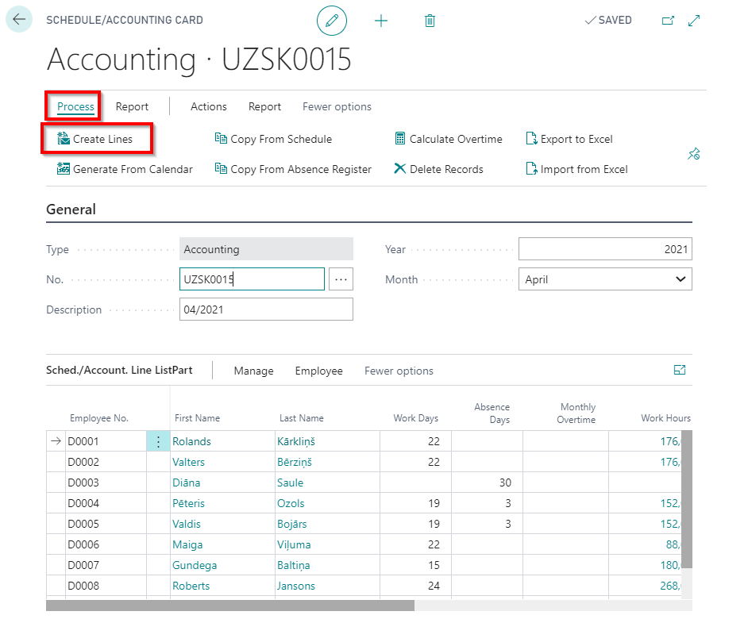
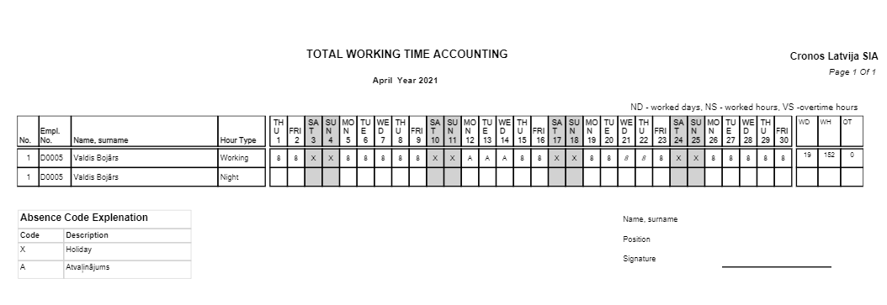
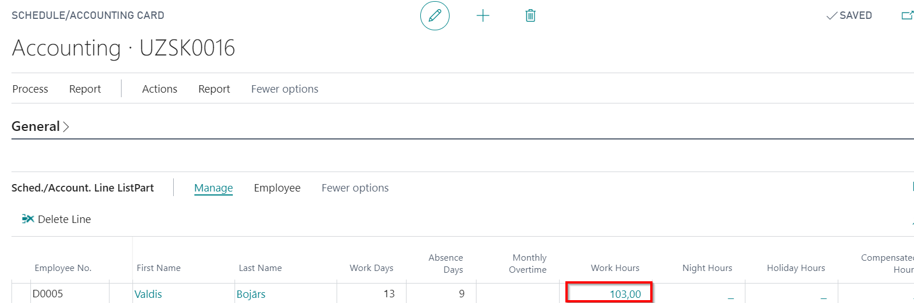
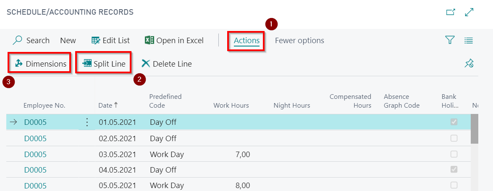
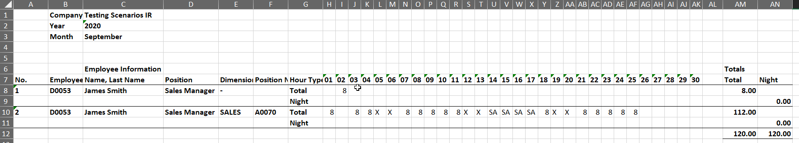
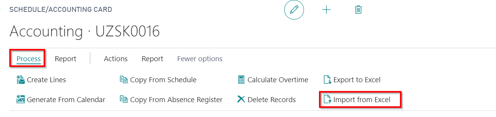
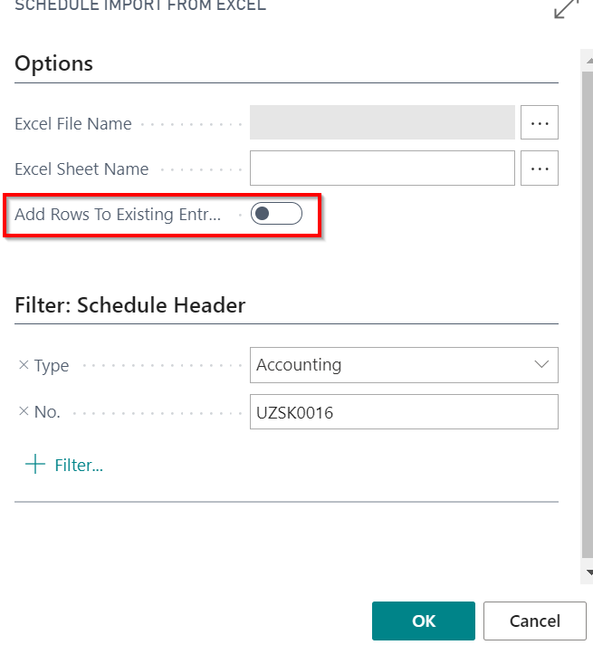

Accounting
Accounting generates at the end of the month when all employees hired within a month, all absences are registered, or at the beginning of the month, But in this case, at the end of the month, the list should definitely be updated with the employees hired during the month. Data in the Accounting table can be copied from the schedule, fill in manually or use Accounting Export/Import function to/from MS Excel (create a list of employees, export to Excel, and then import back to the system).

Codes what are used for marking working time and absences are stated in Payroll and Cause of absence setups.

Creating new Accounting table
New Accounting tabel can be created: LV Payroll Role Center - Accountings – button + New. The number will be assigned automatically. Next you need to set the Year and Month, for what the Accounting tabel will be created (automatically filled with current year and month).
Creating the list of employees
The list of employees in the Accounting tabel generates with the function: Process - Create Lines, as a result, the list of employees appears, according the filters what was set prior to generation. Filter can be used to group employees in several tables, if necessary.
Several ways to fill in the table
Data from Schedule
Accounting table can be filled in with planned working time data from Schedule table. For this purpose use function Copy from Schedule. In this case all registered absences will be ignored. To get correct data on employee's absences function should be used Copy from absence Register, As a result data from absence will be collected in the recording tabel table – for the granted vacations, sick leaves, maternity leaves, and other absences.
Hour split by dimensions
In case if for some employees the same day working hours must be split to different dimensions, hour can be split by pressing the buttons Actions  and Split Line
and Split Line  . The system will set up another row to enter hours. Dimensions can be added with button Dimensions
. The system will set up another row to enter hours. Dimensions can be added with button Dimensions  .
.
 and 
Filling table with MS Excel
The Accounting table has been exported (sent) to Excel file. To do this, employee list must be created in Accounting table. But Accounting table may not be filled with data from the absence register prior to export. However the data from Absence Register will ease the data entering manually in Excel. Exporting the table takes place using a feature Export to Excel. When the export of the Accounting was successfully made, then to newly created file can be copied data from other files or also can be added information manually. When importing this file back to the system, all information entered will be saved. Only fields for hours, holidays and absences can be modified.
Absence codes can be used only the same as they are stated in the system, otherwise system will not be able to recognize them, when importing the file back to the system. Pay attention that first row include totals/ actual worked hours, including night hours (second row) and overtime (third row). This table also introduces hired new employees within a month. There are free rows at the bottom of the table for these entries. In case if some employees worked hours need to be split between different dimensions, those hours with different dimensions should be stated in the separate entry.

Updating the Accounting before closing the reporting month
Updating the accounting table
also Accounting table must be updated with new employees what was hired during the month. Use function Create Lines to update. If necessary, refresh data also from the Schedule.
Adding data with MS Excel
If you fill data by using Export to Excel, then during the month it is also possible to add manually all hired employees. There are free rows at the bottom of the table for these entries. If the list of employees in the system and the Excel table coincides(sequence can be different, but employee numbers must be included and must match), then the imports of this table back to the program will be successful.
Import from Excel
At the beginning of the next month, when data on the current month of the tabel are entered, perform importing back to system. To import Accounting table back to the system, use function Import from Excel. Note that this function should be carried out in the Accounting, which was previously exported to Excel.
 and

In case if Dimensions are used in Accounting tables, should be paid attention that first row for the employee should be created from the system (without dimension assigned) and only then the row with dimension should be added. In case if the function Add Rows to Existing Entries, system will add new data by not correcting the previous ones.